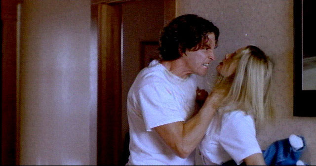

{kind=link}
{kind=link}
{kind=link}
{kind=link}
{kind=link}
{kind=link}
{kind=link}
{kind=link}
{kind=link}
{kind=link}
{kind=link}
{kind=link}
{kind=link}
{kind=link}
{kind=link}
{kind=link}
{kind=link}
{kind=link}
{kind=link}
Mind Games
The Future of Entertainment?
We’ve all been there. Sitting in a dark movie theater. Thoroughly engrossed in the story. Then, one of the characters does something really stupid. You know, something you would never do. You’re immediately distracted by this blunder. You begin thinking to yourself, “This is so unbelievable. There’s no way that guy wouldn’t know his wife was cheating on him! Nobody but an idiot would fall for her ridiculous excuses!” Or you’re muttering under your breath, “Oh, yeah, that makes sense. Anybody with half a brain could figure out what this guy is up to! But noooo, not them. They’re completely oblivious!”
Sometimes you sit through it, patiently waiting for the film to redeem itself. Other times, you get so irritated, you just want to reach out, grab the character (or maybe the writer and director) by the shoulders, and say: “What were you thinking? I can't buy this! Wake up and get real!”
... the course of action will be plotted by your psyche.Well, now you can. Sort of. With the release of TENDER LOVING CARE, the latest project from Aftermath Media, you’ll finally be in a position to exert a little influence. Though there is a caveat. You will be able to control the direction of the story, but where you end up may still be a surprise because the course of action will be plotted by your psyche.
...an intriguing, mind-opening experience that just may be the future of entertainment...Heady stuff in the name of entertainment, to be sure. But don’t worry, this has nothing to do with telekinesis and the software doesn’t include an embedded link to the Psychic Friends Network -- although you should be prepared for a few probing questions. Basically, it's harmless fun and small sacrifice for the opportunity to engage in an intriguing, mind-opening experience that just may be the future of entertainment -- or at least Aftermath’s vision for the future of entertainment.
After creating THE 7TH GUEST, one of the most successful CD-ROM games ever, and the record-setting follow-up, THE 11TH HOUR, Aftermath’s creative team has learned a thing or two and may be in as good a position as any to predict what the future of entertainment might be. In fact, Aftermath has firmly established itself as a leading-edge creator of both content and technology. With the debut of TENDER LOVING CARE (TLC), the company could now redefine the standard for interactivity.
Voyeurism as Interaction
The first movie that watches you while you are watching it.Rob Landeros, Aftermath’s Co-founder and Artistic Director, describes TLC as “The first movie that watches you while you are watching it.” Which actually sounds more like Big Brother’s sinister idea of entertainment than the latest production hatched by a bunch of creative types in the peaceful Rogue River Valley. But marketing hyperbole aside, TLC is vastly different from anything else currently available or possibly even in development within the interactive entertainment industry.

What sets TLC apart is that the action -- and interaction -- isn’t defined by what room a character walks in, how she opens a secret passageway, what bridge he takes, who she encounters along the way, or what he blows up. Instead, it revolves around more true-to-life (and by many people’s standards, more compelling) scenarios based upon how human beings perceive their circumstances, how they respond to uncomfortable situations, what motivates them to act or feel a certain way, and how they are affected by the actions of others.Even more intriguing, the characters and plot elements of TLC are guided by the viewer’s own personal comfort level as indicated by his or her perceptions, predilections, and aversions. The program is structured to develop a psychological profile of the viewer through a series of exit polls and thematic apperception tests (TATs) placed after each episode in the story. TATs are psychological tests commonly used to measure personality characteristics through projective techniques focusing on dominate drives, emotions, sentiments, complexes, attitudes, and conflicts.
...viewers may be delighted to discover that they can also snoop into a folder with their own name on it to see how their personality profile is being developed...In the interest of authenticity, Aftermath did, indeed, consult with a professor of psychology to develop TATs specifically for the project. As the viewer responds to these tests, the story “corrects itself” to reflect the viewer's preferences -- albeit with a finite number of options. Even the characters' dispositions are modified so that if the viewer doesn't like a particular character, he or she will continue to become less likable as the plot unfolds. Some -- though probably not all -- viewers may be delighted to discover that they can also snoop into a folder with their own name on it to see how their personality profile is being developed as the story progresses. Although Aftermath is quick to point out that the analysis is for entertainment purposes only.
A Focus Group of One
TLC represents an extraordinarily unique approach to interactive entertainment, and the implementation is completely unprecedented. The project was the brainchild of Aftermath’s creative director, Rob Landeros, and resident filmmaker, David Wheeler, who wrote and directed TLC, and also directed THE 11TH HOUR. Wheeler explains some of the thinking behind the development of the project:
“The ultimate interactive experience would be if you had biofeedback in the theater. You’d sit in a chair and be wired somehow, and the projector could gather enough information to adjust the story according to how you were feeling. So if something was too scary, it could make it a little less scary...if you were watching a love scene and getting bothered by it, well it would cut it back; or if you were really liking it, it would push it even further, etc. We thought that would be great, if that existed, but it doesn’t -- at least not yet. So we tried to tap into the way people feel and react, not only to the thematic apperception tests, but to the story itself.”
TLC is an intense psychological drama, which Wheeler adapted from Andrew Neiderman’s novel by the same name, about a young couple that loses their only child in a car accident. As a result, the wife apparently begins to lose her grip on reality, so they hire a live-in psychiatric nurse to assist with her treatment. Then, predictably, an emotional tug-of-war ensues. The nurse and the husband are on opposite sides of the fence regarding the wife’s treatment, but simultaneously drawn to each other by a dangerous, erotically charged attraction and test of wills. Ultimately, the story becomes an emotional roller-coaster of lust, deception, and power.
The psychological theme and the content obviously served as a springboard for the creative team’s ideas about interactivity. “I thought if we’re going to have puzzles, we should have things that related to psychology -- but in a fun way,” Wheeler says. “We thought of rat mazes and ink blot tests, and then we pushed it a step further.”
Additionally, Wheeler and Landeros wanted to explore innovative new ways to create non-gaming interactive entertainment that was sophisticated enough to appeal to adults. “Although we've been very, very successful with games, we don’t think that this incredible tool -- this nonlinear format -- should be limited to that,” asserts Wheeler.
“We’re interested in stuff that is more emotional and cerebral.”He adds that interactivity isn’t dependent upon playing a game or puzzle, or moving a character around, it’s really just a different way of thinking. “I don't call it interactive when you create a character, he or she walks down the hall, and then the viewer is asked: Should the character go left or right?’ I hate that -- it’s like playing with dolls or something,” Wheeler declares. “We’re interested in stuff that is more emotional and cerebral.”
Integrated Entertainment Media
In another industry first, TLC was shot on 35mm film and will be released as a feature-length motion picture as well as a PC software product. Other companies have created games based upon movies and movies based upon games, but TLC represents the first time that both have been produced simultaneously, using the same creative team and cast.
Top billing in the cast goes to Golden Globe and Emmy Award-winning actor, John Hurt. In the movie, he plays a small, but pivotal role as the enigmatic psychiatrist, Dr. Turner. In the interactive version, Hurt is “the star of the show” with a greatly expanded role. He not only acts within the drama, but also breaks the “fourth wall” by interacting with the viewer, helping to reveal hidden insights about each character (which are only hinted at in the film), and administering the exit polls and TATs.
Aftermath is hoping to debut TLC late in the Fall of 1998 and separate distribution partners are being sought for the two products. Funsoft has already been contracted for European distribution of the CD-ROM and DVD-ROM and a deal is being negotiated with a major distributor for the U.S. market. Trident Releasing, Aftermath’s film agency, is fielding offers for feature-film distribution.
"A Product for the Rest of Us"
TENDER LOVING CARE is a breakthrough project for a number of reasons. The single biggest reason is the audience. If this adult- themed interactive story is crafted with as much care and expertise as Landeros’ and Wheeler’s previous successes, not only will the company have a hit on its hands, but the market for interactive products could explode as well.